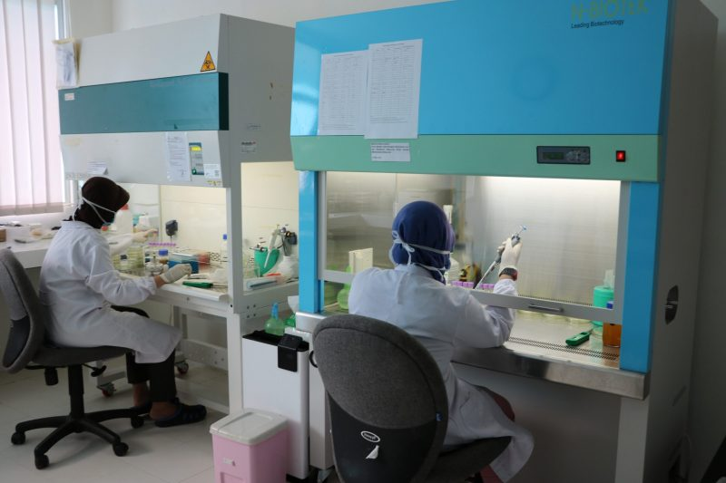

JULY 31, 2024
JULY 31, 2024
JULY 29, 2024
JULY 27, 2024
JULY 26, 2024
JULY 25, 2024

JULY 25, 2024
0
GURU BESAR
0
Fakultas
0
Dosen
0
Mahasiswa
0
Program Studi
0
Tenaga Pendidikan
JULY 29, 2024
Peninjauan UKT Mahasiswa Baru Jalur PBUD 2024JULY 29, 2024
Pengajuan Refund UKT Mahasiswa Baru Jalur SNBP 20244JULY 26, 2024
Perpanjangan Pembayaran UKT Semester Ganjil 2024/2025JULY 25, 2024
Mobile Intelectual Property Clinic (MIC) Tahun 2024JULY 10, 2024
Peninjauan UKT SMM PTN-BARAT 2024June 26, 2024
Pembayaran UKT/SPP Semester Ganjil Tahun Ajaran 2024/2025“
UNRI Memiliki 10 fakultas yang menyelenggarakan program sarjana, pascasarjana, profesi, serta diploma.
Program sarjana bisa diikuti oleh lulusan SMA/SMK/MA/MAK, mempunyai beban studi 144-160 sks dan dapat ditempuh dalam waktu 8-14 semester
UNRI menawarkan program studi lanjutan di tingkat S2 dan S3 yang diselenggarakan di fakultas serta sekolah Pascasarjana.
Program profesi diperuntukkan sebagai bagi lulusan program studi tertentu sebagai syarat untuk mendapatkan gelar keprofesian.

Sebagai Universitas Riset Berkelas Dunia, Universitas Riau memberikan perhatian khusus terhadap kegiatan-kegiatan penelitian serta mendorong dosen dan mahasiswa untuk melakukan dan mengembangkan berbagai penelitian yang berorientasi untuk memenuhi kebutuhan bangsa.
UNRI secara konsisten dan sistematik sejak tahun pendiriannya 1962 berjuang bersama rakyat hingga akar rumput membangun dan menyejahterakan Indonesia. UNRI terus mendorong peningkatan kuantitas dan kualitas pengabdian kepada masyarakat berbasis riset di Indonesia maupun di dunia Internasional dengan prinsip-prinsip pembangunan berkelanjutan. UNRI secara bertahap membangun kepemimpinan pengabdian kepada masyarakat di dunia internasional, antara lain untuk mendesiminasikan nilai-nilai baik keindonesiaan dan kemanusiaan.
Turut mengahasilkan SDM yang unggul di tingkat pendidikan tinggi sejak 1962 baik di Provinsi Riau maupun Skala nasional. Meningkatkan dan memperkokoh daya saing SDM melalui tri dharma pergurauan tinggi: pendidikan & pengajaran, penelitian, dan pengabdian kepada masyarakat. Berkontribusi dalam memenuhi kebutuhan teknologi, menciptakan lapangan kerja, pertumbuhan ekonomi regional dan nasional. Menyediakan dan mengatur pendanaan bagi penyediaan sarana dan prasarana pendidikan serta penyelenggaraan pendidikan sesuai dengan standar dengan mutu terbaik.
Mencetak mahasiswa berwawasan global dan berintegritas yang dilandasi nilai-nilai Pancasila.

Alumni UNRI tersebar di berbagai wilayah, berkiprah di tingkat nasional dan global.


Copyright @ Universitas Riau